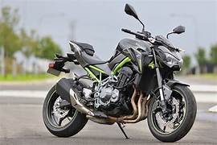

En esta pagina hablaremos de la pasion por algunas motos de alto cilintraje entre las categorias se encuenta:
MT09:
57'000.000 COP
La tercera generación de MT llegó con un diseño radical. Sigue explotando el estilo Hyper Naked con una estética minimalista, sin cubiertas, iluminaciones el LED y acabado Crystal Graphite en el bastidor, dándole apariencia de ligereza y funcionalidad.
La familia MT tiene en la MT-09 una de sus monturas más excitantes gracias a su impresionante motor de tres cilindros con configuración "crossplane", su avanzada electrónica y su imagen afilada que en 2024 se actualiza para resultar todavía más impactante. Se mantiene la versión limitable para el carnet A2 con 47,6 CV a 6.000 rpm limitada y que pasa a 95,2 CV a 9.000 rpm cuando se deslimita.
KAWASAKI Z900:

62'000.000 COP
La Kawasaki Z900 es una de las naked más populares del mercado, con nuevos colores en 2024, y de nuevo disponible con versión limitable para el A2. Su imagen de inspiración Sugomi es uno de sus principales reclamos, con un faro full-LED que hace de ella una moto muy personal.
450SR:
32'000.000 COP
La 450SR ofrece experiencias en la pista de carreras llenas de velocidad y aerodinamismo, pasando de 0 a 100 km/h en cuestión de segundos.
Cuenta con un motor bicilíndrico en línea de 450cc, alcanzando 50 caballos de fuerza para mayor potencia y velocidad en la pista. Está equipada con suspensiones KYB, prolongando la vida de la llanta y reduciendo la distancia de frenado, cuidando la vida útil de los frenos.